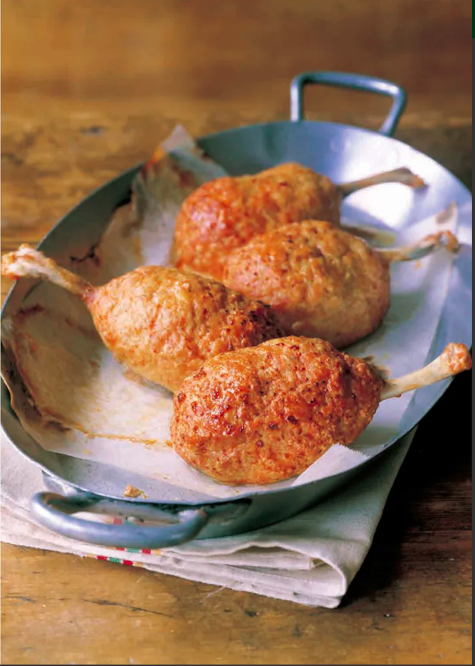

Luffy's Favourite, Meat on Bone

The captain's favourite, one always at hand.
The first thing Sanji cooked once he joined the Strawhats. Luffy's order was "Meat on a bone!!"
And since then it's an indispensable part of Luffy's adventures.
Ingredients (Serves 4):
- 4 chicken drumsticks
- 4 hard-boiled eggs
- ¼ cup breadcrumbs
- 3 tbsp. milk
- Mix (a):
- 18 oz. (500g)ground chicken
- 1 tsp. salt
- a little black pepper
- 1 egg
Steps:
- Make chicken drumstick "tulips". Use kitchen scissors to cut
the meat loose from the handle end of the drumstick. Roll the
meat down the bone until it is fully inside-out at the end.
- Soak the breadcrumbs in milk. Knead mix (a) in a bowl, then add breadcrumb
and knead again.
- Fold the meaty end of the drumstick around a hard-boiled egg.
If the meat doesn't cover well enough, add cuts to loosen it up.
Oil hands lightly and cover drumstick and egg with step 2 breacrumb mixture.
- Bake at 200°C for 15-20 minutes, watching carefully.